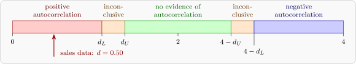

13.2 Detecting autocorrelation
The first check is a plot of the residuals against time, looking for the runs of Figure 28. The standard formal test is that of Durbin and Watson, which uses the statistic \[ d = \frac {\sum _{t=2}^n(e_t - e_{t-1})^2}{\sum _{t=1}^ne_t^2} , \] computed from the least-squares residuals. If neighbouring residuals are alike, the differences \(e_t - e_{t-1}\) are small, and so is \(d\).
Theorem 13.2.1. Let \(r_1 = \sum _{t=2}^ne_te_{t-1}\big /\sum _{t=1}^ne_t^2\), the lag-one autocorrelation of the residuals. Then \[ d = 2(1 - r_1) - \frac {e_1^2 + e_n^2}{\sum _{t=1}^ne_t^2} , \] so \(d \approx 2(1 - r_1)\), and \(0 \le d \le 4\) approximately: \(d\) near \(2\) indicates no autocorrelation, near \(0\) strong positive, and near \(4\) strong negative autocorrelation.
Proof. Expanding the numerator, \begin {align*} \sum _{t=2}^n(e_t - e_{t-1})^2 &= \sum _{t=2}^ne_t^2 + \sum _{t=2}^ne_{t-1}^2 - 2\sum _{t=2}^ne_te_{t-1} \\ &= \Bigl (2\sum _{t=1}^ne_t^2 - e_1^2 - e_n^2\Bigr ) - 2\sum _{t=2}^ne_te_{t-1} , \end {align*}
since the first sum omits \(e_1^2\) and the second omits \(e_n^2\). Dividing by \(\sum e_t^2\) gives the identity. The end term is small when \(n\) is moderate, and since \(|r_1| \le 1\) approximately, \(d\) lies between \(0\) and \(4\). □
To test \(H_0\colon \rho = 0\) against \(H_1\colon \rho > 0\), small values of \(d\) are significant. The exact null distribution of \(d\) depends on \(\mathbf {X}\), but Durbin and Watson showed that its critical value always lies between two bounds, \(d_L\) and \(d_U\), which depend only on \(n\), the number of regressors \(k\) and \(\alpha \), and which are tabulated. The rule is:
- if \(d < d_L\), reject \(H_0\): there is positive autocorrelation;
- if \(d > d_U\), do not reject \(H_0\);
- if \(d_L \le d \le d_U\), the test is inconclusive.
For negative autocorrelation, the same rule is applied to \(4 - d\). Figure 29 summarises the regions. For example, at \(\alpha = 0.05\) with \(k = 1\), the bounds are \(d_L = 1.08\), \(d_U = 1.36\) for \(n = 15\), and \(d_L = 1.05\), \(d_U = 1.35\) for \(n = 14\). Software can compute the exact \(p\)-value, which removes the inconclusive region.

Example 13.2.2. Over \(15\) years, a company’s annual sales \(y\), in millions, and its advertising expenditure \(x\), in hundreds of thousands, were:
| Year \(t\) | \(x_t\) | \(y_t\) | \(e_t\) |
| 1 | 4 | 18.8 | 0.742 |
| 2 | 5 | 21.9 | 1.878 |
| 3 | 5 | 21.6 | 1.578 |
| 4 | 6 | 21.6 | \(-0.387\) |
| 5 | 7 | 23.8 | \(-0.151\) |
| 6 | 7 | 24.0 | 0.049 |
| 7 | 8 | 25.4 | \(-0.515\) |
| 8 | 9 | 25.9 | \(-1.980\) |
| 9 | 9 | 26.5 | \(-1.380\) |
| 10 | 10 | 27.0 | \(-2.844\) |
| 11 | 11 | 29.8 | \(-2.008\) |
| 12 | 12 | 32.4 | \(-1.372\) |
| 13 | 12 | 35.3 | 1.528 |
| 14 | 13 | 38.0 | 2.263 |
| 15 | 14 | 40.3 | 2.599 |
The last column holds the residuals from the least-squares line. Fit the line, and test for positive autocorrelation at the \(5\%\) level.
Solution. With \(\bar x = 8.8\), \(\bar y = 27.487\), \(S_{xx} = 138.4\) and \(S_{xy} = 271.86\), \[ \hat \beta _1 = \frac {271.86}{138.4} = 1.964 , \qquad \hat \beta _0 = 27.487 - 1.964(8.8) = 10.20 , \] so \(\hat y = 10.20 + 1.964x\), with \(SS_{\mathrm {Res}} = 41.04\), \(s^2 = 41.04/13 = 3.157\), and the usual standard error \(\operatorname {se}(\hat \beta _1) = \sqrt {3.157/138.4} = 0.151\).
The residuals are positive for years \(1\) to \(3\), negative for years \(4\) to \(12\) (apart from a tiny value in year \(6\)), and positive again for years \(13\) to \(15\): three long runs, the pattern of panel 1 in Figure 28. For the test, \[ \sum _{t=2}^{15}(e_t - e_{t-1})^2 = 20.467 , \qquad d = \frac {20.467}{41.041} = 0.499 . \] As a check on Theorem 13.2.1, \(\sum e_te_{t-1} = 27.155\), so \(r_1 = 0.662\), and with \(e_1^2 + e_{15}^2 = 7.305\), \[ 2(1 - 0.662) - \frac {7.305}{41.041} = 0.677 - 0.178 = 0.499 . \] Since \(d = 0.499 < d_L = 1.08\), \(H_0\) is rejected: the errors are positively autocorrelated. (The exact \(5\%\) point for this design, found by simulation, is \(1.36\), and the exact \(p\)-value is about \(0.00002\).) The standard error \(0.151\) cannot be trusted. By Theorem 13.1.2, if \(\rho \) were \(0.7\), the lag autocorrelations of advertising, \(c_1 = 0.78\), \(c_2 = 0.60\), \(c_3 = 0.42, \dots \), make the bracket equal to \(2.94\): the true standard error would be \(\sqrt {2.94} = 1.7\) times the formula’s, before even allowing for \(s^2\) being too small.
Questions on this section
Stuck on something here? Ask below and it stays attached to this topic.